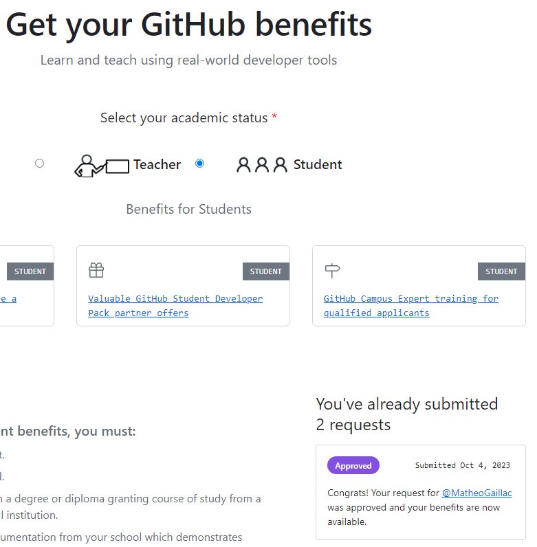
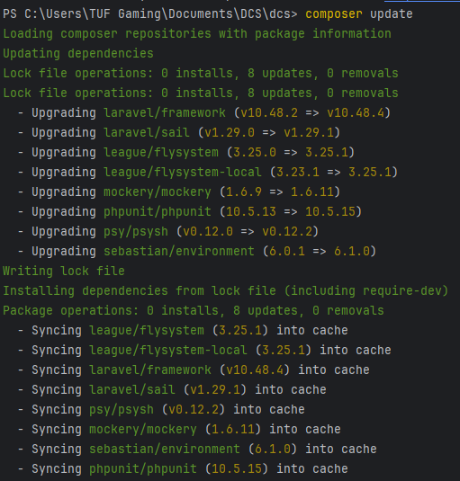
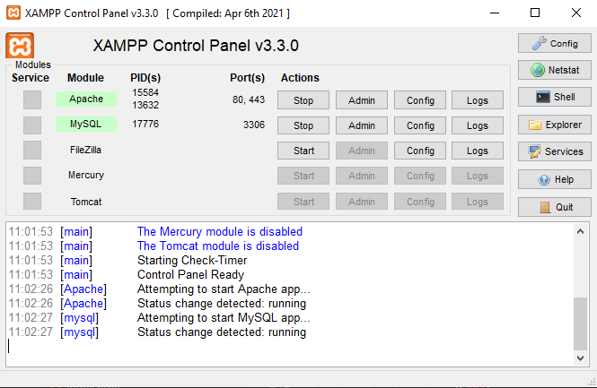

Ma formationen BTS SIO
La Martinière Duchère
09/2022 - 06/2024
Présentation
Option SLAM: Conception et développement d'applications Conception et développement d'une solution applicative, maintenance de celle-ci, et gestion des bases de données. Formation à la cybersécurité et à son intégration dans l'entreprise en tenant compte des dimensions techniques, organisationnelles, juridiques. Compétences sur la protection des données et l'identité numérique de l'entreprise, la sécurisation des équipements et usages des utilisateurs.
Langages & Outils

Laravel

PHP

PhpStorm

Git

Java

Javascript

C#

NetCore
Mise en place et récupération du Student Pack de Github
Recenser et identifier les ressources numériques
Ce pack offre un accès à plusieurs logiciels et services, notamment des outils de développement et de gestion de projet. En récupérant le Pack, j'ai pu accéder à des logiciels plus complets et adaptés, non seulement pour mes études, mais aussi pour mon environnement de travail personnel.
Mise en place d'un système d'authentification API par le biais de Token
Mettre en place et vérifier les niveaux d’habilitation associés à un service

Lors d'un cours, nous avons eu l'opportunité de mettre en place un système d'authentification API par le biais d'un token en Angular et Laravel. Ce système consistait à attribuer des tokens d'authentification aux utilisateurs autorisés pour sécuriser l'accès aux services. Ensuite, nous avons vérifié que le système fonctionnait correctement en le testant de différentes manières
Utilisation de "Composer" pour la continuité d'une application sous Laravel
Vérifier les conditions de la continuité d’un service informatique
Etant donné que nous avons plusieurs fois travaillé sur nos sites avec le Framework Laravel, nous avons dû nous assurer de la continuité de nos applications. C'est pour quoi nous avons utilisés l'outil "Composer", qui permet d'installer ou de mettre à jour les packages de notre application. Les dépendances peuvent ainsi êtres installées ou mises à jour selon un fichier données dans notre arborescence.
Apprentissage et mise en place de test unitaires
Réaliser les tests d’intégration et d’acceptation d’un service
La réalisation de test pour une application afin de s'assurer de son fonctionnement et de son intégrité sont primordial, c'est pour quoi, lors d'un TP en cours nous avons travaillé sur la mise mise en place de test unitaire notamment sur l'une de nos applications en Laravel. Ces tests permettent de s'assurer de la conformités des comportements de notre applications et de trouver d'éventuels problèmes selon les rapports.
Mise en place d'un environnement de travail correspondant à celui vu en cours
Mettre en place son environnement d’apprentissage personnel
Afin d'approfondir mes connaissances et de continuer des projets chez moi, j'ai dû mettre en place sur mon ordinateur personnel un environnement de travail similaire à celui de ma formation. J'ai notamment installé Composer pour les packages, PhpStorm comme IDE, Xampp pour obtenir un serveur local et une base de données.
Création d'un compte professionnel sur Linkedin
Gérer son identité professionnelle
Linkedin est un réseau professionnel utilisé par de nombreuses entreprises et professionnels, c'est un lieu de rencontre, de connexion et de partage. En créant mon compte, je fourni alors des informations sur mes formations, mes compétences et mes expériences, afin de me présenter et de renforcer ma visibilité professionnelle.
Mon projet d'avenir en termes d'études et de profession
Développer son projet professionnel